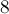
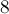
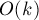
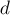
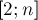

MAXimal
добавлено: 25 Aug 2011 13:55
редактировано: 22 Oct 2011 19:29
Содержание [скрыть]
Принцип включений-исключений
Принцип включений-исключений — это важный комбинаторный приём, позволяющий подсчитывать размер каких-либо множеств, или вычислять вероятность сложных событий.
Формулировки принципа включений-исключений
Словесная формулировка
Принцип включений-исключений выглядит следующим образом:
Чтобы посчитать размер объединения нескольких множеств, надо просуммировать размеры этих множеств по отдельности, затем вычесть размеры всех попарных пересечений этих множеств, прибавить обратно размеры пересечений всевозможных троек множеств, вычесть размеры пересечений четвёрок, и так далее, вплоть до пересечения всех множеств.
Формулировка в терминах множеств
В математической форме приведённая выше словесная формулировка выглядит следующим образом:
Её можно записать более компактно, через сумму по подмножествам. Обозначим через  множество, элементами которого являются . Тогда принцип включений-исключений принимает вид:
множество, элементами которого являются . Тогда принцип включений-исключений принимает вид:
Эту формулу приписывают Муавру (Abraham de Moivre).
Формулировка с помощью диаграмм Венна
Пусть на диаграмме отмечены три фигуры  , и
, и  :
:
Тогда площадь объединения равна сумме площадей , и за вычетом дважды покрытых площадей , , , но с прибавлением трижды покрытой площади :
Аналогичным образом это обобщается и на объединение  фигур.
фигур.
Формулировка в терминах теории вероятностей
Если — это события, — их вероятности, то вероятность их объединения (т.е. того, что произойдёт хотя бы одно из этих событий) равна:
Эту сумму также можно записать в виде суммы по подмножествам множества , элементами которого являются события :
Доказательство принципа включений-исключений
Для доказательства удобно пользоваться математической формулировкой в терминах теории множеств:
где , напомним, — это множество, состоящее из -ых.
Нам нужно доказать, что любой элемент, содержащийся хотя бы в одном из множеств , учтётся формулой ровно один раз. (Заметим, что остальные элементы, не содержащиеся ни в одном из , никак не могут быть учтены, поскольку отсутствуют в правой части формулы).
Рассмотрим произвольный элемент  , содержащийся ровно в множествах . Покажем, что он посчитается формулой ровно один раз.
, содержащийся ровно в множествах . Покажем, что он посчитается формулой ровно один раз.
Заметим, что:
- в тех слагаемых, у которых , элемент учтётся ровно
 раз, со знаком плюс;
раз, со знаком плюс; - в тех слагаемых, у которых , элемент учтётся (со знаком минус) ровно раз — потому что посчитается только в тех слагаемых, которые соответствуют двум множествам из множеств, содержащих ;
- в тех слагаемых, у которых
 , элемент учтётся ровно раз, со знаком плюс;
, элемент учтётся ровно раз, со знаком плюс; - в тех слагаемых, у которых , элемент учтётся ровно раз, со знаком ;
- в тех слагаемых, у которых k">, элемент учтётся ноль раз.
Таким образом, нам надо посчитать такую сумму биномиальных коэффициентов:
Проще всего посчитать эту сумму, сравнив её с разложением в бином Ньютона выражения :
Видно, что при  выражение представляет собой не что иное, как . Следовательно,
выражение представляет собой не что иное, как . Следовательно,  , что и требовалось доказать.
, что и требовалось доказать.
Применения при решении задач
Принцип включений-исключений сложно хорошо понять без изучения примеров его применений.
Сначала мы рассмотрим три простые задачи "на бумажке", иллюстрирующие применение принципа, затем рассмотрим более практические задачи, которые трудно решить без использования принципа включений-исключений.
Особо следует отметить задачу "поиск числа путей", поскольку в ней демонстрируется, что принцип включений-исключений может иногда приводить к полиномиальным решениям, а не обязательно экспоненциальным.
Простая задачка о перестановках
Сколько есть перестановок чисел от  до таких, что первый элемент больше
до таких, что первый элемент больше  , а последний — меньше ?
, а последний — меньше ?
Посчитаем число "плохих" перестановок, т.е. таких, у которых первый элемент и/или последний .
Обозначим через  множество перестановок, у которых первый элемент , а через
множество перестановок, у которых первый элемент , а через  — у которых последний элемент . Тогда количество "плохих" перестановок по формуле включений-исключений равно:
— у которых последний элемент . Тогда количество "плохих" перестановок по формуле включений-исключений равно:
Проведя несложные комбинаторные вычисления, получаем, что это равно:
Отнимая это число от общего числа перестановок , мы получим ответ.
Простая задачка о (0,1,2)-последовательностях
Сколько существует последовательностей длины , состоящих только из чисел , причём каждое число встречается хотя бы раз?
Снова перейдём к обратной задаче, т.е. будем считать число последовательностей, в которых не присутствует хотя бы одно из чисел.
Обозначим через () множество последовательностей, в которых не встречается число  . Тогда по формуле включений-исключений число "плохих" последовательностей равно:
. Тогда по формуле включений-исключений число "плохих" последовательностей равно:
Размеры каждого из равны, очевидно,  (поскольку в таких последовательностях могут встречаться только два вида цифр). Мощности каждого попарного пересечения равны (поскольку остаётся доступной только одна цифра). Наконец, мощность пересечения всех трёх множеств равна (поскольку доступных цифр вообще не остаётся).
(поскольку в таких последовательностях могут встречаться только два вида цифр). Мощности каждого попарного пересечения равны (поскольку остаётся доступной только одна цифра). Наконец, мощность пересечения всех трёх множеств равна (поскольку доступных цифр вообще не остаётся).
Вспоминая, что мы решали обратную задачу, получаем итоговый ответ:
Количество целочисленных решений уравнения
Дано уравнение:
где все (где ).
Требуется посчитать число решений этого уравнения.
Забудем сначала про ограничение , и просто посчитаем число неотрицательных решений этого уравнения. Это легко делается через биномиальные коэффициенты — мы хотим разбить элементов на  групп, т.е. распределить
групп, т.е. распределить  "стенок", разделяющих группы, по
"стенок", разделяющих группы, по  местам:
местам:
Посчитаем теперь по формуле включений-исключений число "плохих" решений, т.е. таких решений уравнения, в которых один или более  больше .
больше .
Обозначим через (где  ) множество таких решений уравнения, в которых , а все остальные (для всех ). Чтобы посчитать размер множества , заметим, что у нас по сути та же комбинаторная задача, что решалась двумя абзацами выше, только теперь элементов исключены из рассмотрения и точно принадлежат первой группе. Таким образом:
) множество таких решений уравнения, в которых , а все остальные (для всех ). Чтобы посчитать размер множества , заметим, что у нас по сути та же комбинаторная задача, что решалась двумя абзацами выше, только теперь элементов исключены из рассмотрения и точно принадлежат первой группе. Таким образом:
Аналогично, мощность пересечения двух множеств и равна числу:
Мощность каждого пересечения трёх и более множеств равна нулю, поскольку элементов не хватит на три и более переменных, больше либо равных .
Объединяя всё это в формулу включений-исключений и учитывая, что мы решали обратную задачу, окончательно получаем ответ:
Количество взаимно простых чисел в заданном отрезке
Пусть даны числа и  . Требуется посчитать количество чисел в отрезке
. Требуется посчитать количество чисел в отрезке ![[1; r]](../tex2png/cache/cbbe446745deee8da70e67040c523d61.png) , взаимно простых с .
, взаимно простых с .
Сразу перейдём к обратной задаче — посчитаем количество не взаимно простых чисел.
Рассмотрим все простые делители числа ; обозначим их через  ().
().
Сколько чисел в отрезке , делящихся на ? Их количество равно:
Однако если мы просто просуммируем эти числа, то получим неправильный ответ — некоторые числа будут просуммированы несколько раз (те, которые делятся сразу на несколько ). Поэтому надо воспользоваться формулой включений-исключений.
Например, можно за  перебрать подмножество множества всех -ых, посчитать их произведение, и прибавить или вычесть в формуле включений-исключений очередное слагаемое.
перебрать подмножество множества всех -ых, посчитать их произведение, и прибавить или вычесть в формуле включений-исключений очередное слагаемое.
Итоговая реализация для подсчёта количества взаимно простых чисел:
int solve (int n, int r) { vector<int> p; for (int i=2; i*i<=n; ++i) if (n % i == 0) { p.push_back (i); while (n % i == 0) n /= i; } if (n > 1) p.push_back (n); int sum = 0; for (int msk=1; msk<(1<<p.size()); ++msk) { int mult = 1, bits = 0; for (int i=0; i<(int)p.size(); ++i) if (msk & (1<<i)) { ++bits; mult *= p[i]; } int cur = r / mult; if (bits % 2 == 1) sum += cur; else sum -= cur; } return r - sum; }
Асимптотика решения составляет  .
.
Количество чисел в заданном отрезке, кратных хотя бы одному из заданных чисел
Даны чисел  и число . Требуется посчитать количество чисел в отрезке , которые кратны хотя бы одному из .
и число . Требуется посчитать количество чисел в отрезке , которые кратны хотя бы одному из .
Алгоритм решения практически совпадает с предыдущей задачей — делаем формулу включений-исключений над числами , т.е. каждое слагаемое в этой формуле — это количество чисел, делящихся на заданный поднабор чисел (иными словами, делящихся на их наименьшее общее кратное).
Таким образом, решение сводится к тому, чтобы за перебрать поднабор чисел, за операций найти их наименьшее общее кратное, и прибавить или вычесть из ответа очередное значение.
Количество строк, удовлетворяющих заданному числу паттернов
Дано паттернов — строк одинаковой длины, состоящих только из букв и знаков вопроса. Также дано число . Требуется посчитать количество строк, удовлетворяющих ровно паттернам либо, в другой постановке, как минимум паттернам.
Заметим вначале, что мы можем легко посчитать число строк, удовлетворяющих сразу всем указанным паттернам. Для этого надо просто "пересечь" эти паттерны: посмотреть на первый символ (во всех ли паттернах на первой позиции стоит вопрос, или не во всех — тогда первый символ определён однозначно), на второй символ, и т.д.
Научимся теперь решать первый вариант задачи: когда искомые строки должны удовлетворять ровно паттернам.
Для этого переберём и зафксируем конкретное подмножество паттернов размера — теперь мы должны посчитать количество строк, удовлетворяющих этому набору паттернов и только ему. Для этого воспользуемся формулой включений-исключений: мы суммируем по всем надмножествам множества , и либо прибавляем к текущему ответу, либо отнимаем от него количество строк, подходящих под текущее множество:
где обозначает количество строк, подходящих под набор паттернов .
Если мы просуммируем по всем , то получим ответ:
Однако тем самым мы получили решение за время порядка .
Решение можно ускорить, заметив, что в разных суммирование зачастую ведётся по одним и тем же множествам .
Перевернём формулу включений-исключений и будем вести суммирование по . Тогда легко понять, что множество учтётся в формулах включений-исключений, везде с одним и тем же знаком :
Решение получилось с асимптотикой .
Перейдём теперь ко второму варианту задачи: когда искомые строки должны удовлетворять как минимум паттернам.
Понятно, мы можем просто воспользоваться решением первого варианта задачи и просуммировать ответы от до . Однако можно заметить, что все рассуждения по-прежнему будут верны, только в этом варианте задачи сумма по идёт не только по тем множествам, размер которых равен , а по всем множествам с размером .
Таким образом, в итоговой формуле перед будет стоять другой коэффициент: не один биномиальный коэффициент с каким-то знаком, а их сумма:
Заглянув в Грэхема (Грэхем, Кнут, Паташник. "Конкретная математика" [1998] ), мы видим такую известную формулу для биномиальных коэффициентов:
Применяя её здесь, получаем, что вся эта сумма биномиальных коэффициентов сворачивается в:
Таким образом, для этого варианта задачи мы также получили решение с асимптотикой :
Количество путей
Есть поле  , некоторые клеток которого — непроходимые стенки. На поле в клетке (левая нижняя клетка) изначально находится робот. Робот может двигаться только вправо или вверх, и в итоге он должен попасть в клетку , избежав все препятствия. Требуется посчитать число путей, которыми он может это сделать.
, некоторые клеток которого — непроходимые стенки. На поле в клетке (левая нижняя клетка) изначально находится робот. Робот может двигаться только вправо или вверх, и в итоге он должен попасть в клетку , избежав все препятствия. Требуется посчитать число путей, которыми он может это сделать.
Предполагаем, что размеры и  очень большие (скажем, до
очень большие (скажем, до  ), а количество — небольшое (порядка
), а количество — небольшое (порядка  ).
).
Для решения сразу в целях удобства отсортируем препятствия в том порядке, в каком мы можем их обойти: т.е., например, по координате , а при равенстве — по координате  .
.
Также сразу научимся решать задачу без препятствий: т.е. научимся считать число способов дойти от одной клетки до другой. Если по одной координате нам надо пройти клеток, а по другой — клеток, то из несложной комбинаторики мы получаем такую формулу через биномиальные коэффициенты:
Теперь чтобы посчитать число способов дойти от одной клетки до другой, избежав всех препятствий, можно воспользоваться формулой включений-исключений: посчитаем число способов дойти, наступив хотя бы на одно препятствие.
Для этого можно, например, перебрать подмножество тех препятствий, на которые мы точно наступим, посчитать число способов сделать это (просто перемножив число способов дойти от стартовой клетки до первого из выбранных препятствий, от первого препятствия до второго, и так далее), и затем прибавить или отнять это число от ответа, в соответствии со стандартной формулой включений-исключений.
Однако это снова будет неполиномиальное решение — за асимптотику . Покажем, как получить полиномиальное решение.
Решать будем динамическим программированием: научимся вычислять числа ![d[i][j]](../tex2png/cache/a18f11689b09b23faa10c78d6b244cf8.png) — число способов дойти от -ой точки до
— число способов дойти от -ой точки до  -ой, не наступив при этом ни на одно препятствие (кроме самих и , естественно). Всего у нас будет точки, поскольку к препятствиям добавляются стартовая и конечная клетки.
-ой, не наступив при этом ни на одно препятствие (кроме самих и , естественно). Всего у нас будет точки, поскольку к препятствиям добавляются стартовая и конечная клетки.
Если мы на секунду забудем про все препятствия и просто посчитаем число путей из клетки в клетку , то тем самым мы учтём некоторые "плохие" пути, проходящие через препятствия. Научимся считать количество этих "плохих" путей. Переберём первое из препятствий , на которое мы наступим, тогда количество путей будет равно , умноженному на число произвольных путей из  в . Просуммировав это по всем , мы посчитаем количество "плохих" путей.
в . Просуммировав это по всем , мы посчитаем количество "плохих" путей.
Таким образом, значение мы научились считать за время . Следовательно, решение всей задачи имеет асимптотику .
Число взаимно простых четвёрок
Дано чисел: . Требуется посчитать количество способов выбрать из них четыре числа так, что их совокупный наибольший общий делитель равен единице.
Будем решать обратную задачу — посчитаем число "плохих" четвёрок, т.е. таких четвёрок, в которых все числа делятся на число  .
.
Воспользуемся формулой включений-исключений, суммируя количество четвёрок, делящихся на делитель  (но, возможно, делящихся и на больший делитель):
где  — это количество простых в факторизации числа , — количество четвёрок, делящихся на .
— это количество простых в факторизации числа , — количество четвёрок, делящихся на .
Чтобы посчитать функцию , надо просто посчитать количество чисел, кратных , и биномиальным коэффициентом посчитать число способов выбрать из них четвёрку.
Таким образом, с помощью формулы включений-исключений мы суммируем количество четвёрок, делящихся на простые числа, затем отнимаем число четвёрок, делящихся на произведение двух простых, прибавляем четвёрки, делящиеся на три простых, и т.д.
Число гармонических троек
Дано число . Требуется посчитать число таких троек чисел , что они являются гармоническими тройками, т.е.:
- либо ,
- либо 1">, 1">, 1">.
Во-первых, сразу перейдём к обратной задаче — т.е. посчитаем число негармонических троек.
Во-вторых, заметим, что в любой негармонической тройке ровно два её числа находятся в такой ситуации, что это число взаимно просто с одним числом тройки и не взаимно просто с другим числом тройки.
Таким образом, количество негармонических троек равно сумме по всем числам от  до произведений количества взаимно простых с текущим числом чисел на количество не взаимно простых чисел.
до произведений количества взаимно простых с текущим числом чисел на количество не взаимно простых чисел.
Теперь всё, что нам осталось для решения задачи — это научиться считать для каждого числа в отрезке  количество чисел, взаимно простых (или не взаимно простых) с ним. Хотя эта задача уже рассматривалась нами выше, описанное выше решение не подходит здесь — оно потребует факторизации каждого из чисел от до , и затем перебора всевозможных произведений простых чисел из факторизации.
Поэтому нам понадобится более быстрое решение, которое подсчитывает ответы для всех чисел из отрезка сразу.
Для этого можно реализовать такую модификацию решета Эратосфена:
- Во-первых, нам надо найти все числа в отрезке , в факторизации которых никакое простое не входит дважды. Кроме того, для формулы включений-исключений нам потребуется знать, сколько простых содержит факторизация каждого такого числа.
Для этого нам надо завести массивы , хранящие для каждого числа количество простых в его факторизации, и — содержащий для каждого числа или — все простые входят в него в степени или нет.
После этого во время решета Эратосфена при обработке очередного простого числа мы пройдёмся по всем числам, кратным текущему числу, и увеличим у них, а у всех чисел, кратных квадрату от текущего простого — поставим .
- Во-вторых, нам надо посчитать ответ для всех чисел от до , т.е. массив — количество чисел, не взаимно простых с данным.
Для этого вспомним, как работает формула включений-исключений — здесь фактически мы реализуем её же, но с перевёрнутой логикой: мы словно перебираем слагаемое и смотрим, в какие формулы включений-исключений для каких чисел это слагаемое входит.
Итак, пусть у нас есть число
, для которого , т.е. это число, участвующее в формуле включений-исключений. Переберём все числа, кратные , и к ответу каждого из таких чисел мы должны прибавить или вычесть величину . Знак — прибавление или вычитание — зависит от : если нечётна, то надо прибавлять, иначе вычитать.
Реализация:
int n; bool good[MAXN]; int deg[MAXN], cnt[MAXN]; long long solve() { memset (good, 1, sizeof good); memset (deg, 0, sizeof deg); memset (cnt, 0, sizeof cnt); long long ans_bad = 0; for (int i=2; i<=n; ++i) { if (good[i]) { if (deg[i] == 0) deg[i] = 1; for (int j=1; i*j<=n; ++j) { if (j > 1 && deg[i] == 1) if (j % i == 0) good[i*j] = false; else ++deg[i*j]; cnt[i*j] += (n / i) * (deg[i]%2==1 ? +1 : -1); } } ans_bad += (cnt[i] - 1) * 1ll * (n-1 - cnt[i]); } return (n-1) * 1ll * (n-2) * (n-3) / 6 - ans_bad / 2; }
Асимптотика такого решения составляет  , поскольку почти для каждого числа оно совершает примерно итераций вложенного цикла.
, поскольку почти для каждого числа оно совершает примерно итераций вложенного цикла.
Число перестановок без неподвижных точек
Докажем, что число перестановок длины без неподвижных точек равно следующему числу:
и приблизительно равно числу:
(более того, если округлить это выражение к ближайшему целому — то получится в точности число перестановок без неподвижных точек)
Обозначим через множество перестановок длины с неподвижной точкой в позиции ().
Воспользуемся теперь формулой включений-исключений, чтобы посчитать число перестановок хотя бы с одной неподвижной точкой. Для этого нам надо научиться считать размеры множеств-пересечений , они выглядят следующим образом:

поскольку если мы знаем, что число неподвижных точек равно , то тем самым мы знаем позицию элементов перестановки, а все остальные элементов могут стоять где угодно.
Подставляя это в формулу включений-исключений и учитывая, что число способов выбрать подмножество размера из -элементного множества равно , получаем формулу для числа перестановок хотя бы с одной неподвижной точкой:
Тогда число перестановок без неподвижных точек равно:
Упрощая это выражение, получаем точное и приблизительное выражения для количества перестановок без неподвижных точек:
(поскольку сумма в скобках — это первые  членов разложения в ряд Тейлора
членов разложения в ряд Тейлора  )
)
В заключение стоит отметить, что аналогичным образом решается задача, когда требуется, чтобы неподвижных точек не было среди первых элементов перестановок (а не среди всех, как мы только что решали). Формула получится такая, как приведённая выше точная формула, только в ней сумма будет идти до , а не до .
Задачи в online judges
Список задач, которые можно решить, используя принцип включений-исключений:
- UVA #10325 "The Lottery" [сложность: низкая]
- UVA #11806 "Cheerleaders" [сложность: низкая]
- TopCoder SRM 477 "CarelessSecretary" [сложность: низкая]
- TopCoder TCHS 16 "Divisibility" [сложность: низкая]
- SPOJ #6285 NGM2 "Another Game With Numbers" [сложность: низкая]
- TopCoder SRM 382 "CharmingTicketsEasy" [сложность: средняя]
- TopCoder SRM 390 "SetOfPatterns" [сложность: средняя]
- TopCoder SRM 176 "Deranged" [сложность: средняя]
- TopCoder SRM 457 "TheHexagonsDivOne" [сложность: средняя]
- SPOJ #4191 MSKYCODE "Sky Code" [сложность: средняя]
- SPOJ #4168 SQFREE "Square-free integers" [сложность: средняя]
- CodeChef "Count Relations" [сложность: средняя]
Литература